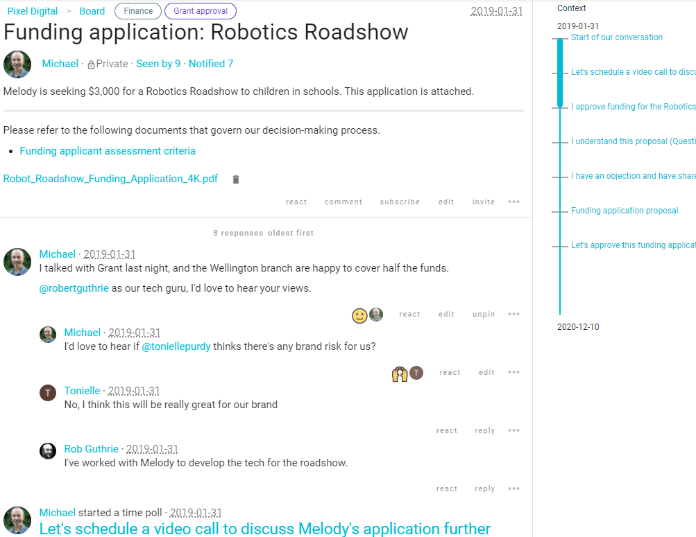

Guide for Director users
Loomio is a private and secure software service for your Corporation board.
It is a safe place online where you can receive notifications of meetings, read documents, comment and ask questions, vote on resolutions, discuss topics between meetings, and search a record of past decisions and discussion.
This Loomio service is provided by the Office of Registrar of Indigenous Corporations (ORIC) as part of a pilot service to help directors of Corporations with good governance.
You can recognise the official service designation by the following internet address and email headers:
Decisions.oric.gov.au (bookmark this in your browser)
Only people invited to your Loomio group have access to see and comment on discussions and decisions. Although this service is provided by ORIC, no one from ORIC has access to your group.
Minimum requirements to access Loomio
Loomio works in any standard internet browser running on a computer, tablet or internet capable smartphone. There is no need to download any software or app.
- Computer, tablet or smartphone with a current internet browser and email application.
- Internet access via wifi, ethernet or mobile data plan (3G or above)
Loomio works with all standard internet browsers such as Google Chrome, Microsoft Edge, Firefox and Apple Safari. Only old unsupported browsers are not supported, such as Microsoft Internet Explorer.
Contact Loomio support to let us know if you have problems seeing Loomio on your device.
Click here to Contact Loomio Support or send an email to contact@loomio.org.
Read on for:
- Sign-in to Loomio
- Comment in a thread
- Vote in a Poll or Proposal
- Frequently Asked Questions
- Troubleshooting
Sign-in to Loomio
You have received an invitation to join your board's Loomio group!
Signing into Loomio is easy - you don’t need a password, and your computer will remember you.
Invitation via email
Your invitation to join your Loomio group will arrive in your email inbox and look something like this:

Click the Accept invitation button at the centre of the email.
The link will take you to the internet browser on your computer, tablet or smartphone and open a page where you are invited to create an account on the service at decisions.oric.gov.au.
On your computer you will see:
Click the CONTINUE WITH EMAIL button at the centre of the screen.
You will be taken to this page to create your Loomio user account.

Type in your name, so people in your group will recognise you.
Click the CREATE ACCOUNT button at the bottom right hand corner of the screen.
An account on decisions.oric.gov.au will then be created for you.
Upload profile photo (Optional)
We encourage you to upload a profile picture which will be displayed whenever you make a comment. This is helpful for other members to easily identify you. This step is optional.
If you don’t want to add a photo now: Click Use initials.

Click Upload new photo.
Select a suitable photo file from your computer.

Click Open to upload your photo.
Threads and Comments
Loomio discussion 'threads' are the place where you will discuss governance topics. You will be invited to participate in discussion threads for your board, and you can find these on your group page which will look something like this:

You will be invited to write a comment in a discussion thread.
Scroll the thread to read other people's comments until you come to the place where you can write your own comment.
Make sure that the Comment tab is highlighted and write in the space alongside your user profile image.
- Write your comment and click Post Comment to have your say.

Vote in a Poll
You will be invited to vote in a Poll. Polls help your board make decisions, and are typically used to approve minutes, pass resolutions and find a time to meet.
The invitation will often arrive via email as below.
Click on the link in the message to go to Loomio, where you can read the Poll or Proposal along with any supporting documents, and Vote.
Here is an example of a typical Poll:

To vote
Click on the Option you wish to vote. (Optional: Leave a reason or comment about your vote.)
Click Submit Vote

Frequently asked questions for getting started
Q. Who sent the invitation or notifcation email?
A. The email has been sent by someone you know, likely the Chairperson, CEO or administrator of your board.
Q. Is it safe?
A. Yes, you have been invited to a private online space set up specifically for your board.
Q. How can I know it is safe?
A. Here are some checks you can do: Do you recognise the name of the person who has invited you? Do you recognise the name of your Corporation? Are you expecting an invitation?
Q. Do I have to sign in every time I use Loomio?
A. If this is your computer, your computer should 'remember' you and keep you signed in to Loomio. However you will need to sign in again if you reset your computer or sign into Loomio on a different computer or phone.
Q. Do I need a password?
A. No, you don’t need a password, however you can use one if you like. A password will help you sign in if you have trouble receiving email.
Troubleshooting
Problem: I can’t receive email
Solution: Your Loomio user account is linked to your preferred email address. If you cannot access your email, you will need to sign into Loomio with a password.
Contact Loomio support if you need a password set for you.
Problem: I need to receive my invitation via SMS text
Solution: Contact Loomio support so we can generate an SMS text for you. It will look something like:
Hi, this is Michael from Loomio. Click on the link below to go to our board page on Loomio. Follow the instructions to set up your user account and click ‘Sign in via email’. Reply to this text if any problem. Thanks!
https://decisions.oric.gov.au/